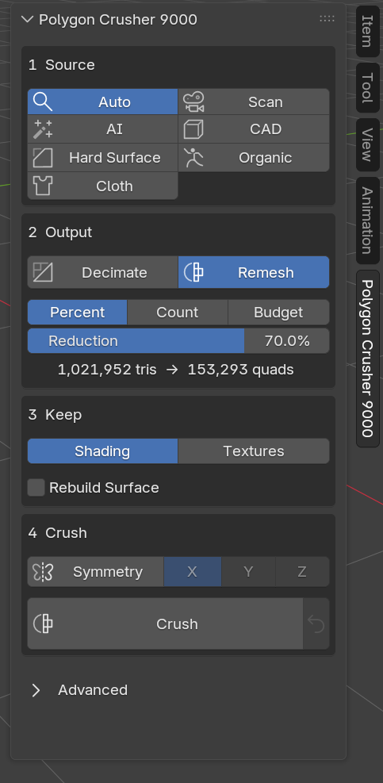

Remesh (Quads)
Decimate keeps the original surface and reduces its triangles. Remesh throws the old triangles away and builds the model again from clean, even quads. Use it when you want to keep editing the model, sculpt on it, subdivide it or animate it. Use Decimate when you need exact triangle counts for a game, or when the original must stay exactly as it is.
Click the Remesh tab under 2 Output, set the amount, and click Crush. The main button is the same: it does the job of the tab you chose.

The count you ask for is the count you get
The amount works like Decimate's (Percent, Count or Budget) and
is turned into quads: half the triangles the amount would keep. The panel
shows tris → quads before you start. The quad engine on its own overshoots a
target by three or four times. Polygon Crusher searches for the setting that
lands on your number, and the status box under Keep tells you the real
count it reached (for example "4,329 faces, 88.9% quads"). If it had to
spend more quads to avoid damage, it says that too.
Models made of loose parts, or parts too small for a quad, come out with a share of triangles joined into quads (often 60 to 90% quads).
What is automatic
Remesh has very few switches because it looks at the model and decides:
- CAD parts (Source: Auto, CAD or Hard Surface). If the model is made of flat faces with round holes and straight walls, it builds a clean graded grid: flat faces stay flat, every hole is a closed round loop, and the hard edges get quad loops. The quads inside flat faces are evened out. Very low counts get a coarser all-quad grid. If the model needs more quads than you asked for, the status says so (a block with many holes needs at least about 1,240). Models that are not flat faces with round holes use the general remesh.
- Many-part models (game weapons, kits of hundreds of parts). Each big part is remeshed on its own and checked against the original. Parts too small or thin for the quad size are simplified as triangles at their share of the budget, then paired into quads, so nothing vanishes.
- Sewn garments (Marvelous Designer, CLO). The panels are sewn together and remeshed in one run.
- Scans. Cracks between patches are closed first (the same repair as Fill Holes), so the quads no longer show every crack.
- Faces pointing both ways (common in 3D-print exports). They are turned to agree first, and the shading is copied from the fixed copy, so edges do not show dark nicks.
- Thin walls and bars. When most walls are about as thin as a quad, the result is also built from a simplified copy and the one that fits the original better is kept.
- Sharp edges. Hard edges and edges you marked Sharp steer the quad loops: on a hard-surface model most of the sharp edges are followed by a loop. With Sharps on (Hard Surface and CAD sources), small round holes stay round and beveled corners stay crisp.
- Damage repair. If a remesh tears holes in a closed model, it tries again with more quads until the result is clean.
- UVs and materials. With Textures on, UVs and materials are carried to the result, and a bake is made automatically if the UV seams would leave cracks. Vertex colors are kept.
- A stuck engine. If the quad engine stops making progress, it is stopped and the next option is tried.
The switches you have
- Source — pick the right one. See Source Types.
- Shading — the result takes the original's shading, so the surface still reads the same with far fewer faces.
- Textures — keep UVs and materials. With Bake to Textures on, you can also tick Bake Into Kept UVs to bake into the carried UV layout instead of a fresh unwrap. See Bake Maps and Auto UVs.
- Sharps — Hard Surface and CAD only.
- Symmetry — remeshes one half and mirrors it, so both sides have the same quads and the seam runs straight down the middle. It uses the axis you pick (X, Y or Z).
- Rebuild Surface — off by default. For hopeless input: triangle soups of loose strips, open or self-crossing models. It rebuilds a closed skin first, then remeshes it. Details finer than the skin and your Sharp marks are lost. With it off, nothing changes.
- Quad Density (Advanced) — paint where you want smaller or larger quads. See Quad Density.
- Show Hard Edges (Advanced) — see which edges the quad loops will follow. See Show Hard Edges.
Keep Original works as in Decimate, with one difference: Remesh leaves the source in place, and Revert cannot go back to it when Keep Original is off (the panel shows a red warning).
LODs, Clean Mesh, Protect and the flat-area options are hidden while Remesh is selected.
After a Remesh the new mesh is selected and active.
Best on, and not for
Remesh is best on scans, sculpts, organic shapes, garments and CAD parts. On a hard-surface model with many bevels (a game weapon), Decimate with Sharps keeps the edges crisper, so use Decimate there if crisp hard edges matter more than quads.
The quad engine's result differs slightly between processors (Apple Silicon and Intel, for example), because they round floating-point maths differently. On your own computer, the same model with the same settings gives the same mesh every time.
Progress
While it runs, the Crush button becomes Cancel with a progress bar that steps through Reading, Preparing, Remeshing, Building, Shading and Baking. The slow steps run in small pieces, so Blender keeps redrawing.